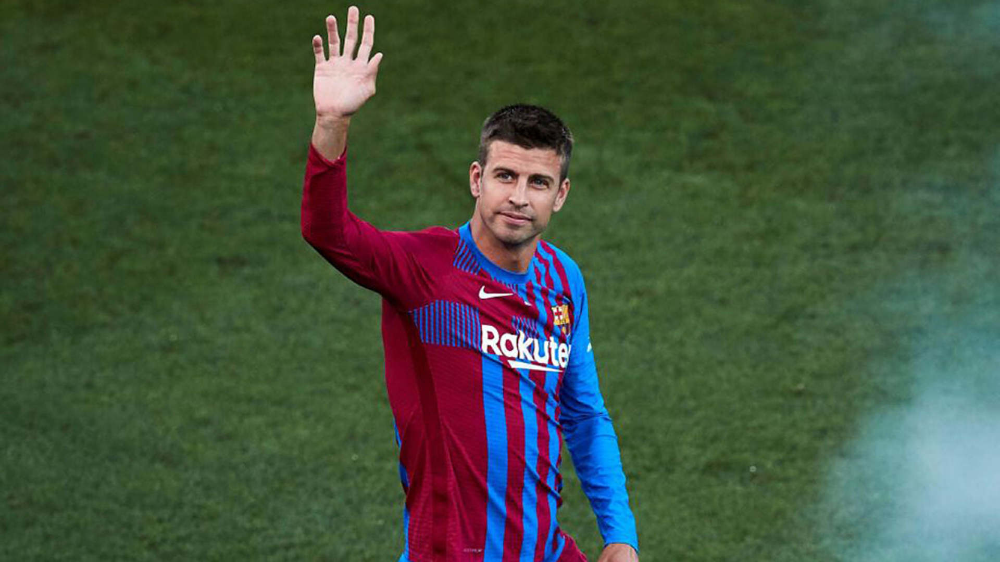

Gerard Piqué mogao bi završiti svoju igračku karijeru na kraju ove sezone, tvrdi katalonski El Nacional.
Iskusni defenzivac navodno je ovu informaciju saopstio Xaviju Hernándezu i Joanu Laporti. Novi klupski trener prihvatio je njegovu odluku, ali postoji mogućnost da 34-godišnjak ostane još jednu dodatnu sezonu u ekipi u slučaju da Xavi primeti da on i dalje može pomoći ekipi.
Ako ostane i u sezoni 2022./2023., tada će potpisati novi ugovor prema kome će igrati za najmanju moguću platu koju propisuje LaLiga.
Poslednji put ažurirano pre 90 minuta